DC Motor Position: Root Locus Controller Design
Key MATLAB commands used in this tutorial are: tf , rlocus , sgrid , pole , minreal , feedback , step
Contents
From the main problem, the open-loop transfer function of the DC Motor is given as follows.
(1)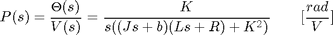
The structure of the control system has the form shown in the figure below.

For the original problem setup and the derivation of the above equations, please refer to the DC Motor Position: System Modeling page.
With a 1-radian step reference, the design criteria are the following.
- Settling time less than 0.040 seconds
- Overshoot less than 16%
- No steady-state error, even in the presence of a step disturbance input
Now let's design a controller using the root locus method.
Create a new m-file and type in the following commands (refer to main problem for the details of getting these commands).
J = 3.2284E-6;
b = 3.5077E-6;
K = 0.0274;
R = 4;
L = 2.75E-6;
s = tf('s');
P_motor = K/(s*((J*s+b)*(L*s+R)+K^2));
Drawing the open-loop root locus
The main idea of root locus design is to predict the closed-loop response from the root locus plot which depicts possible closed-loop pole locations and is drawn from the open-loop transfer function. Then by adding zeros and/or poles via the controller, the root locus can be modified in order to achieve a desired closed-loop response. Let's first view the root locus for the plant. Add the following commands to the end of your m-file and run it in the MATLAB command window to generate a plot like the one shown below.
rlocus(P_motor)
title('Root Locus - P Control')
sgrid(.5, 0)
sigrid(100)
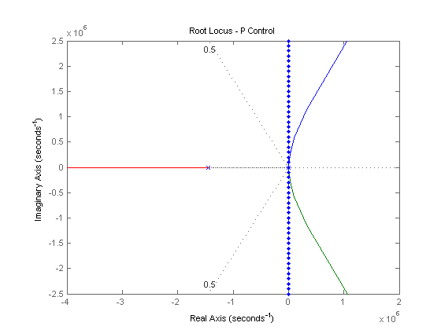 The commands sgrid and sigrid are functions that mark regions of the complex plane corresponding to certain parameters. sgrid is a function in the Control System Toolbox; however, to use sigrid you will have to download it here. The variables in the sgrid command are the damping ratio (zeta = 0.5) and the natural frequency (Wn = 0). The variable in the sigrid command is the sigma term. The zeta and sigma used above correspond to an overshoot of 16% and a settling time of 0.040 seconds, respectively, for a canonical second-order system. Even though our motor transfer function is third order, it will be explained that these second-order based definitions will work well. No value is given for Wn since we have no requirement on rise time.
From the above figure, the two open-loop poles near the origin cannot be distinguished because the scale of the axes is set to show the third pole which is much farther to the left than the other two poles. The MATLAB command pole can be employed to determine the exact values of the open-loop poles.
poles = pole(P_motor)
poles =
1.0e+06 *
0
-1.4545
-0.0001
The open-loop pole located very far to the left (further than -1e6) does not affect the closed-loop dynamics unless very large gains are used. These large gains place two of the closed-loop poles in the right-half complex s-plane where the system becomes unstable. Since we will not use gains that will make the closed-loop system unstable, we can neglect this pole by performing a model reduction.
Model reduction
In general, the real part of a pole indicates how quickly the transient portion of the corresponding mode decays to zero (assuming negative real part). Therefore, if you have a transfer function which has one (or more) poles much farther to the left in the complex plane (more negative) than the other poles, their effect on the dynamic response will be hidden by the slower, more dominant poles. In the case of our motor position example, the transient closed-loop response for small gains will not be affected much by the open-loop pole at -1.45e6. The correct way to neglect this pole in order to maintain its steady-state contribution is to keep the DC gain of the transfer function the same, as follows:
(2)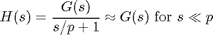
As shown above, the poles of the open-loop transfer function can be identified using the MATLAB command pole. The two poles that dominate are difficult to identify from above because of the scientific notation, but they can be seen more clearly by recognizing that they are the first and third elements of the resulting vector which we have named poles.
poles(1), poles(3)
ans =
0
ans =
-59.2260
We would then like to construct the reduced transfer function to neglect the pole at 1.45e-6 without affecting the steady-state behavior of the system. This can be accomplished with the MATLAB command minreal. Add the following commands to your m-file and re-run.
poles = pole(P_motor); rP_motor = minreal(P_motor*(s/max(abs(poles)) + 1))
rP_motor =
2122
-------------
s^2 + 59.23 s
Continuous-time transfer function.
You can then check that the other poles have not been affected by again using the pole command as shown below.
pole(rP_motor)
ans =
0
-59.2260
Now we can draw the root locus of the reduced system. Add the following commands to the end of your m-file and run it in the command window.
rlocus(rP_motor)
title('Root Locus - P Control')
axis([ -300 100 -200 200])
sgrid(.5, 0)
sigrid(100)
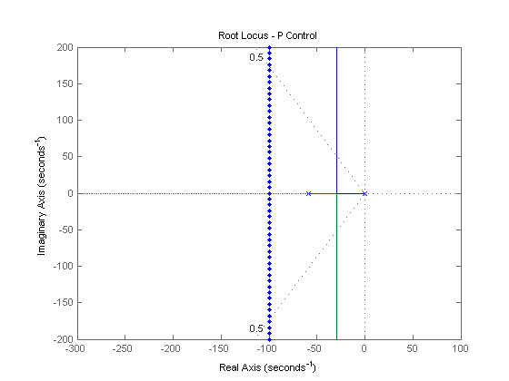 If you examined the original root locus near the origin, it would closely approximate the locus of the reduced transfer function shown above. We can see from this new plot that the closed-loop poles are never fast enough to meet the settling time requirement (that is, they never move to the left of the sigma = 100 vertical line). Also, recall that we need an integrator in the controller (not just in the system) to remove the steady-state error due to a constant disturbance.
Integral control
Now, let's try using integral control to remove the steady-state error due to a constant disturbance. Modify your m-file such that it appears like the following. Note that this adds a 1 / s term to the forward path of the system. Run this m-file and you will obtain a plot like the one shown below.
C = 1/s;
rlocus(C*rP_motor)
title('Root Locus - I Control')
axis([ -300 100 -200 200])
sgrid(.5, 0)
sigrid(100)
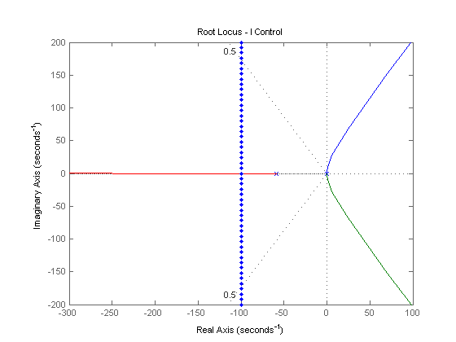 From this root locus we can see that the closed-loop system under integral control is never stable, therefore, a different controller must be employed.
PI control
Now, let's modify the integral controller to a PI controller. Using PI instead of I control adds a zero to the open-loop system. We'll place this zero at s = -20. The zero must lie between the open-loop poles of the system in this case so that the closed-loop system will be stable. Change the lines defining the controller in your m-file to the following. Re-run your m-file and you will obtain a plot like the one shown below.
C = (s + 20) / s;
rlocus(C*rP_motor)
title('Root Locus - PI Control')
axis([ -300 100 -200 200])
sgrid(.5, 0)
sigrid(100)
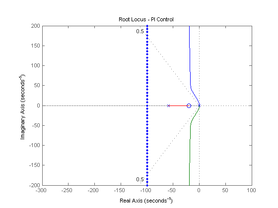 We have managed to stabilize the system and achieve zero steady-state error to a constant disturbance, but the system is still not fast enough.
PID control
In order to pull the root locus further to the left, to make it faster, we need to place a second open-loop zero, resulting in a PID controller. After some experimentation, we place the two PID zeros at s = -60 and s = -70. Change the lines defining the controller in your m-file to the following. Re-run your m-file and you will generate a plot like the one shown below.
C = (s + 60)*(s + 70) / s;
rlocus(C*rP_motor)
title('Root Locus - PID Control')
axis([ -300 100 -200 200])
sgrid(.5, 0)
sigrid(100)
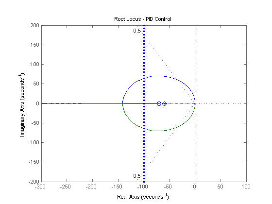 Now, we can see that two of the closed-loop poles can be placed well within both the settling time and percent overshoot requirements. The third closed-loop pole moves from the open-loop pole at s = -59.2 to the open-loop zero at s = -60. This closed-loop pole nearly cancels with the zero (which remains in the closed-loop transfer function) because they are so close together. Therefore, we can neglect its effect. Let's reduce our new model again by performing the zero-pole cancelation using the minreal command. We pass 0.1 as a tolerance parameter as follows. The root locus for this further reduced system with controller is shown below. Note how closely it resembles the root locus without the pole-zero cancelation.
rsys_ol = minreal(C*rP_motor, 0.1);
rlocus(rsys_ol)
title('Root Locus - PID Control')
axis([ -300 100 -200 200])
sgrid(.5, 0)
sigrid(100)
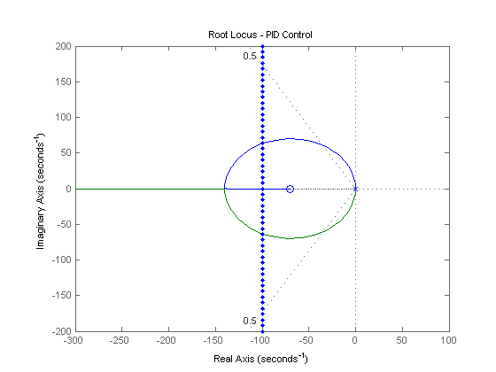 Even though the one open-loop zero was canceled, the other open-loop zero remains in the closed-loop transfer function and cannot be neglected. The effect of an additional zero (if there is no cancellation) is in general to speed up the response and add overshoot. Therefore, we have to be conservative in picking where on the root locus we want the closed-loop poles to lie.
Determining gain using rlocfind command
If you recall, we need the settling time and the overshoot to be as small as possible, particularly because of the effect of the extra zero. Large damping corresponds to points on the root locus near the real axis. A fast response corresponds to points on the root locus far to the left of the imaginary axis. To find the gain corresponding to a point on the root locus, we can use the rlocfind command. Specifically, enter the command [k,poles] = rlocfind(rsys_ol) in the MATLAB command window.
Then go to the plot and select a point on the root locus on left side of the loop, close to the real axis as shown below with the small + marks. This will ensure that the response will be nearly as fast as possible with minimal overshoot. These pole locations indicate that the response would have almost no overshoot if it were a canonical second-order system. Recall, however, that the presence of the zero will add some overshoot.
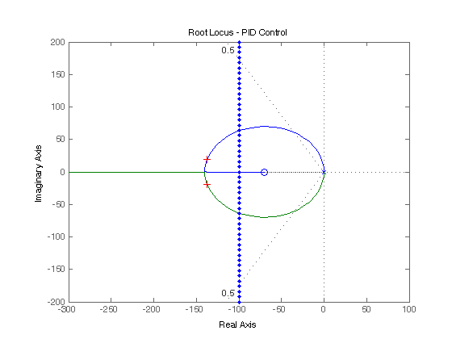
After doing this, you should see the following output in the MATLAB command window.
Select a point in the graphics window
selected_point =
-1.3744e+002 +1.3043e+001i
k =
0.1308
poles =
1.0e+002 *
-1.3874 + 0.1323i
-1.3874 - 0.1323i
Note that the values returned in your MATLAB command window may not be exactly the same, but should at least have the same order of magnitude. You can also get the step response plots for the reference and disturbance with this specific controller and loop gain by executing the following code in the command window. These commands should produce the plots shown below where the annotations to the figures are added by choosing Characteristics from the right-click menu of each of the plots.
sys_cl = feedback(k*rsys_ol,1);
t = 0:0.0001:0.1;
step(sys_cl, t)
grid
ylabel('Position, \theta (radians)')
title('Response to a Step Reference with PID Control')
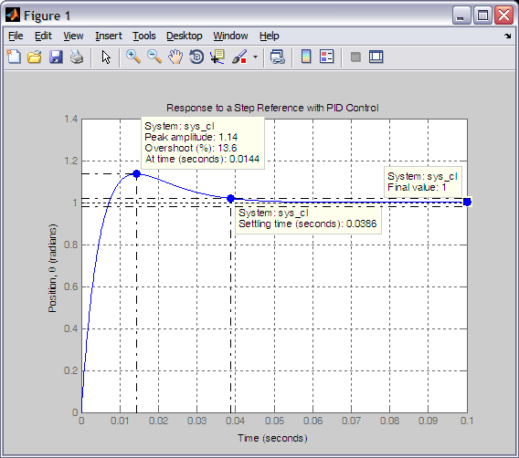
dist_cl = feedback(P_motor,k*C);
figure;step(dist_cl, t)
grid
ylabel('Position, \theta (radians)')
title('Response to a Step Disturbance with PID Control')
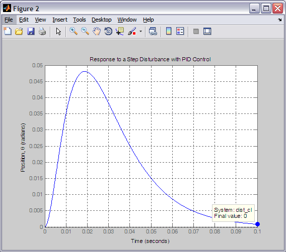
From the above, you can see that in response to a step reference the system has an overshoot of approximately 14%, a settling time just under 0.04 seconds, and no steady-state error. Also, the response to a step disturbance reaches a steady-state value of zero. Therefore, all of the design requirements have been met.
In this example we placed the zeros of our compensator in order to reshape the root locus so that the closed-loop poles could be placed in the region of the complex plane that would achieve our given design requirements. It is in general helpful to understand the principles of how the root locus is drawn, however, MATLAB can be very helpful in refining the design and verifying the resulting performance.